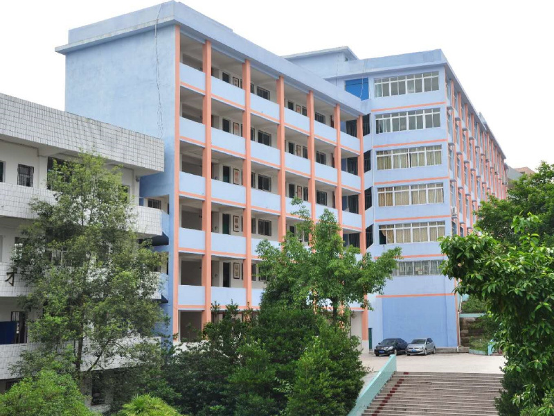
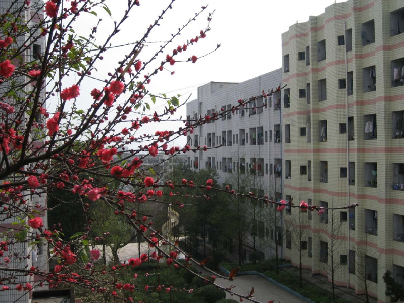
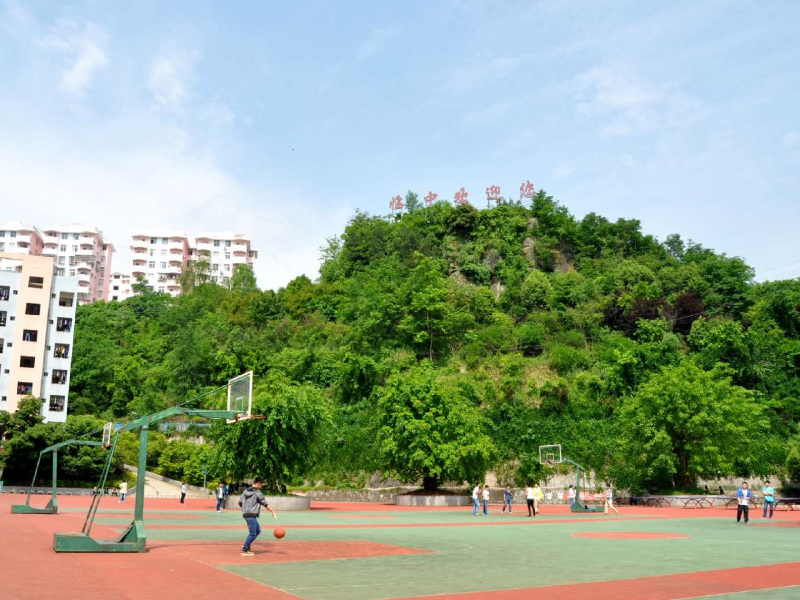
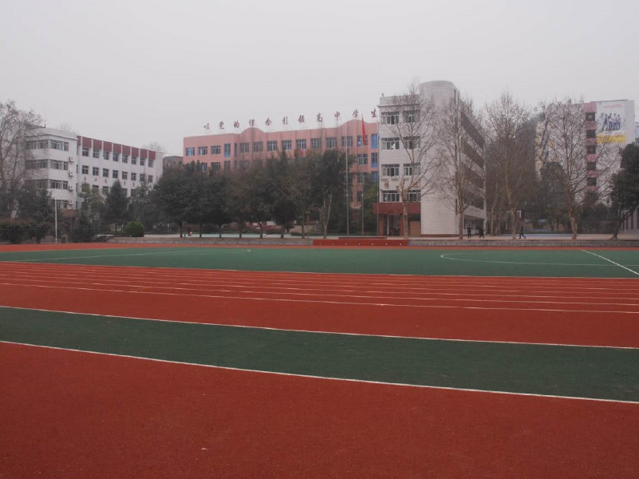
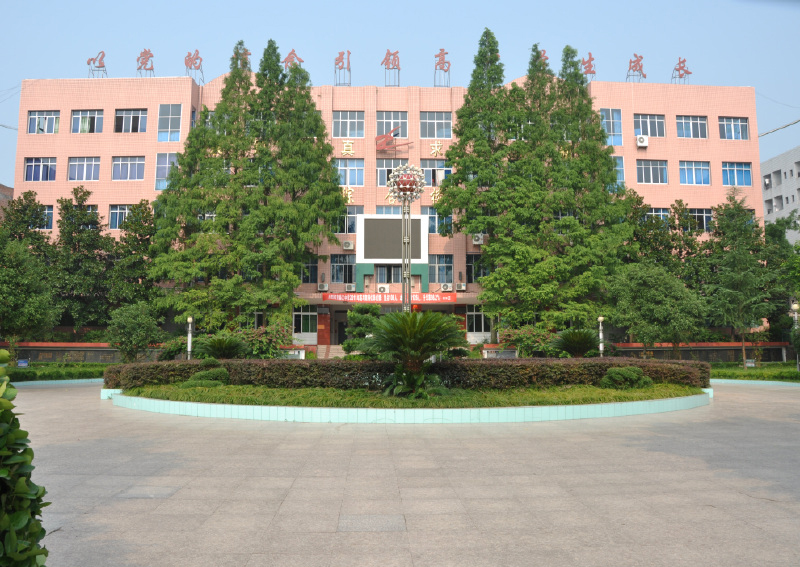
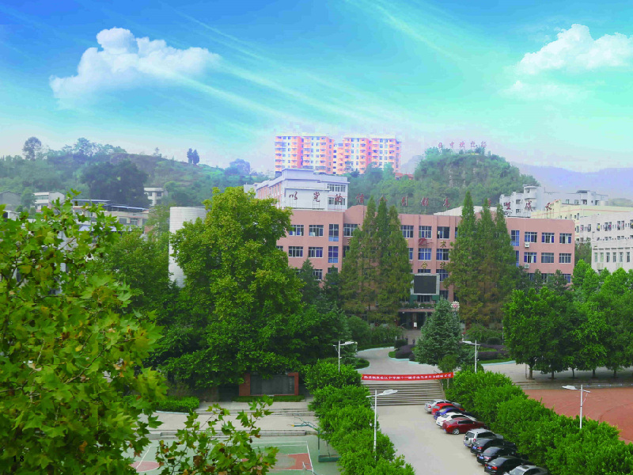

学校先后获得了“全国文明单位”“中国特色教育理念与实践项目学校”“全国中小学心理健康教育示范校”“全国青少年校园足球特色示范学校”“重庆市爱国卫生红旗单位”
“重庆市平安校园”“重庆市德育示范校”“重庆市绿色学校”“重庆市爱国卫生红旗单位”“重庆市园林式单位”“重庆市家长学校示范校”“重庆市示范食堂”
“重庆市中小学思想道德建设先进集体”“重庆市教育科研先进集体”“重庆市科技教育特色学校”等近50块重庆市级以上奖牌
重庆市开州区临江中学师资精良。有正高级教师1人，高级教师78人；有硕士研究生19人；有各级教学名师、骨干教师、专业技术拔尖人才、学术技术带头人64人；荣获各级各类优秀教师和先进教育工作者称号者达186人
重庆市开州区临江中学师资精良。有正高级教师1人，高级教师78人；有硕士研究生19人；有各级教学名师、骨干教师、专业技术拔尖人才、学术技术带头人64人；荣获各级各类优秀教师和先进教育工作者称号者达186人
2018年高考一本上线突破500人，其中清华、北大上线2人，临中在生源质量不占优的情况下连年取得一流成绩，为开州广大人民交出了一份满意的答卷
重庆市开州区临江中学位于渝东北开州千年古镇临江，距城区16公里。学校创办于1956年，原名四川省开县第二中学（简称开二中），系重庆市重点中学。校名先后由郭沫若先生、季羡林先生题写。学校占地230余亩，现有93个教学班，在校学生5500余人，教职工350余人
重庆市开州区临江中学业绩突出。在60年的办学历程中，为高等学府输送了一大批优秀人才
重庆师范大学简称“重庆师大”，重庆师范大学创办于1954年1月，建有大学城校区、沙坪坝校区和北碚校区，校园总面积2688亩，教学科研仪器设备总值2.233亿元
据2018年12月学校官网信息显示，重庆师范大学馆藏纸质图书270余万册、电子图书104万种；下设17个二级学院、1个独立二级学院、70个全日制本科专业（含方向）；其中重庆师范大学计算机与信息科学学院的计算机学科始于80年代，学校于1987年开始招收计算机科学与技术专业的专科生